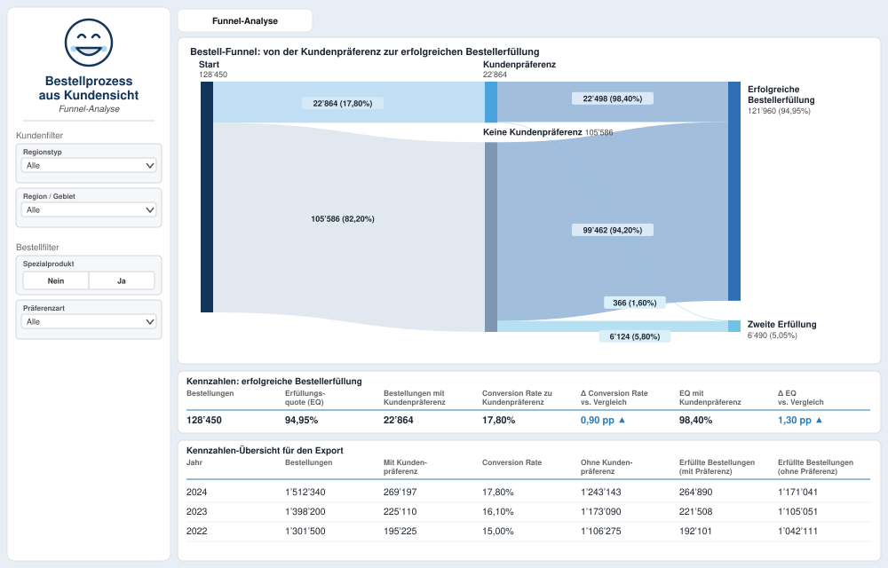

Business-Dashboard: Eine zentrale Datenquelle für wichtige KPIs
Power BI · SQL · Requirements Engineering
Diese Fallstudie zeigt einen realen Fall, an dem ich gearbeitet habe, dargestellt mit synthetischen Daten.
Problem
- Die Daten stammten aus verschiedenen Quellen und mussten von Hand gesammelt und in Excel eingegeben werden. Das dauerte viele Stunden und führte zu vielen Unstimmigkeiten.
- Das Geschäft brauchte kritische KPIs für die laufende Verbesserung seiner Prozesse und als Grundlage für neue Geschäftsinitiativen.
- Die Berechnungslogik war über viele Jahre gewachsen, komplex und schwer verständlich.
Lösung
Ein Power-BI-Dashboard, das die Datenquellen zu einer zentralen Datenquelle (Single Source of Truth) zusammenführt, mit einer transparenteren und einfacheren Berechnungslogik, die klarere und verständlichere Analysen liefert. Es wird von rund 50 Nutzerinnen und Nutzern verwendet.

Daten
Mehrere Datenquellen, mit SQL zu einem konsolidierten Datenmodell kombiniert. Die hier gezeigte Demo verwendet erfundene Zahlen, welche die Struktur des realen Funnels abbilden, aber keine seiner Werte.
Vorgehen
- Konzept gemeinsam mit dem Geschäft entwickelt und dessen Bedürfnisse und Kriterien ermittelt.
- Die Geschäftsregeln verstanden und dokumentiert und die alte Berechnungslogik durch eine transparente ersetzt.
- Anforderungen erhoben sowie Daten und Umsetzung validiert.
- Erkenntnisse dem Geschäft kommuniziert und dem Entwicklungsteam Feedback gegeben.
- Das Entwicklungsteam bei Fragen während der Umsetzung unterstützt.
Beispiel-Erkenntnis: Funnel-Analyse
Die Funnel-Seite verfolgt jede Bestellung von der Kundenpräferenz bis zum Erfüllungsergebnis. Das hilft dem Geschäft, Einflussfaktoren auf eine erfolgreiche Erfüllung zu erkennen und herauszufinden, wo der Aufwand konzentriert werden sollte.
Geschäftlicher Nutzen
- Spart mehr als CHF 1’000 pro Monat durch weniger manuelle Arbeit.
- Ersetzt viele Stunden manueller Datenerhebung und uneinheitliche Daten durch eine automatisierte, verlässliche Datenquelle.
- Liefert dem Geschäft transparente KPIs für die laufende Verbesserung und eine Grundlage für neue Initiativen.
Meine Rolle
Ich habe das Konzept gemeinsam mit dem Geschäft entwickelt, dessen Bedürfnisse und Geschäftsregeln ermittelt und das Requirements Engineering sowie die Validierung von Daten und Umsetzung verantwortet. Ich habe Erkenntnisse dem Geschäft kommuniziert, dem Entwicklungsteam Feedback gegeben und es durchgehend unterstützt.
Tools
- SQL
- Power BI